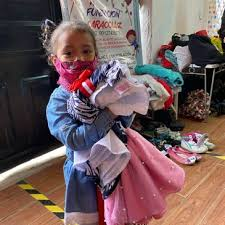
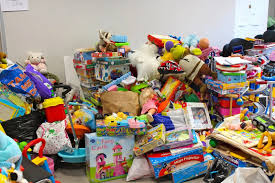

Apoyo a comunidades alimentacion y Tapaz

Una donación masiva de alimentos no perecederos fue recibida por nuestra organización gracias a la colaboración de una cadena de supermercados. Tras coordinar con varias fundaciones, los productos fueron enviados a comunidades rurales afectadas por la escasez de alimentos debido a fenómenos climáticos adversos y a la falta de acceso a recursos. Gracias a esta acción, más de 500 familias recibieron alimentos básicos, contribuyendo a mejorar su situación nutricional durante varios meses.
Ropa de abrigo para familias en situación de calle
Durante una temporada invernal particularmente cruda, nuestra organización fue contactada por una empresa textil que deseaba donar grandes cantidades de ropa de abrigo. Gracias a nuestra red de fundaciones, logramos entregar más de 2,000 prendas a personas en situación de calle y a familias en albergues temporales. Esta acción no solo proporcionó protección contra el frío, sino que también dio esperanza a muchas personas que enfrentaban situaciones extremas.
juguetes para niños en hospitales y para refujio
En colaboración con una campaña de donación realizada por una escuela local, recibimos cientos de juguetes que fueron cuidadosamente seleccionados y distribuidos entre varias fundaciones que trabajan con niños en hospitales. Estos juguetes no solo llevaron alegría a los pequeños, sino que también ayudaron a mejorar su estado emocional durante los largos periodos de hospitalización. La sonrisa de cada niño al recibir su regalo fue un recordatorio del impacto positivo que podemos generar con cada donación.